Description
Usage
MHM(
x,
window = window_quick(),
kernel = kernel_circle,
fun = mean,
na.policy = "omit",
fillvalue = NA,
expand = FALSE,
na.rm = TRUE,
...
)Arguments
- x
SpatRaster
- window
numeric sequence of window sizes (default to
c(3, 13, 23)via window_quick). Passed tokernelfunction- kernel
function among kernels (default to
kernel_circle)- fun
function that takes multiple numbers, and returns a numeric vector (one or multiple numbers). For example mean, modal, min or max
- na.policy
character. Can be used to determine the cells of
xfor which focal values should be computed. Must be one of "all" (compute for all cells), "only" (only for cells that areNA) or "omit" (skip cells that areNA). Note that the value of this argument does not affect which cells around each focal cell are included in the computations (usena.rm=TRUEto ignore cells that areNAfor that)- fillvalue
numeric. The value of the cells in the virtual rows and columns outside of the raster
- expand
logical. If
TRUEThe value of the cells in the virtual rows and columns outside of the raster are set to be the same as the value on the border. Only available for "build-in"funs such as mean, sum, min and max- na.rm
logical passed to
fun. Whether to remove NA in the calculation for each focal cell. Not the NA in the global SpatRaster. See terra::focal- ...
additional arguments passed to
funsuch asna.rm
References
Gaucherel, C. (2007) Multiscale heterogeneity map and associated scaling profile for landscape analysis, Landscape and Urban Planning 82(3) 95-102. doi: 10.1016/j.landurbplan.2007.01.022
Examples
# load terra
library(terra)
# import an example file
# and turn it into a SpatRaster
landscape <- import_example("l1.tif")
# plot it
plot(landscape)
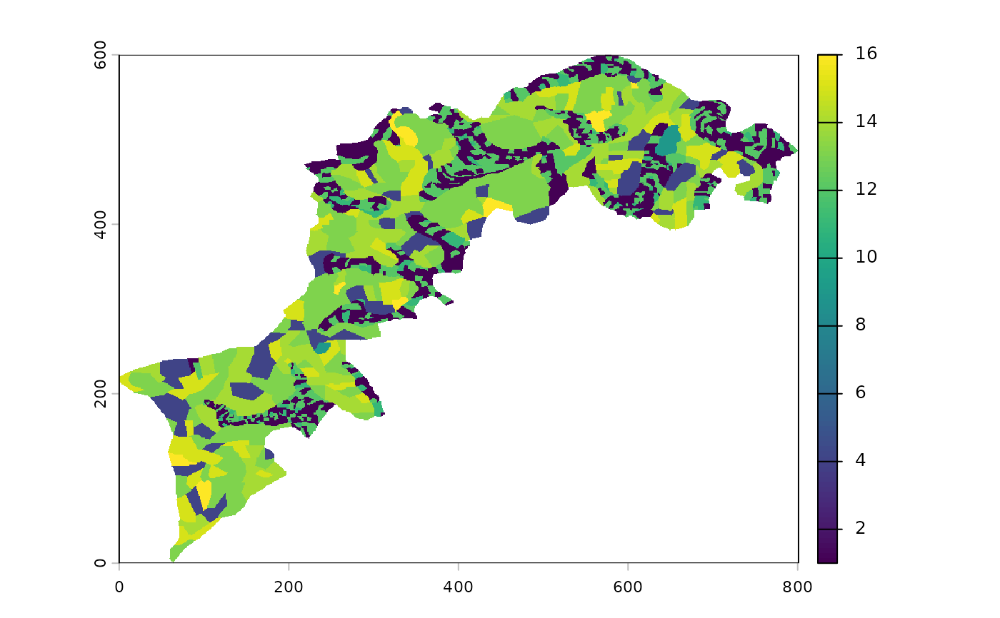
# make it smaller for example purpose:
l0 <- landscape %>% raster_resample(0.1)
# plot the little landscape
p(l0)
 # calculate MHM on it
l0_mhm <- MHM(l0,
window=seq(2, 13, by=2)+1,
fun=shannon_evenness)
# display all monoscale maps
p(l0_mhm)
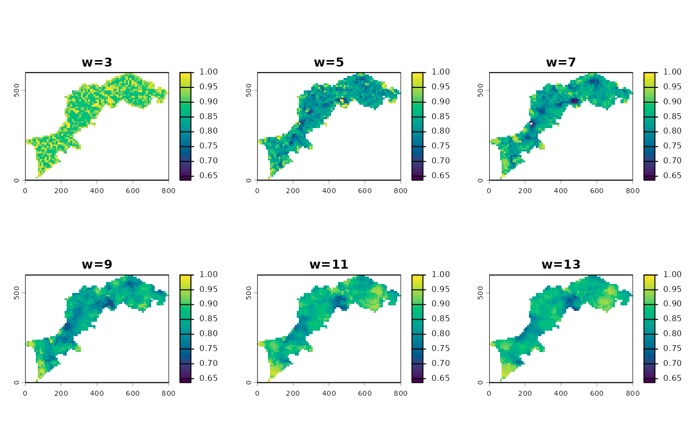
# the profile plot
ms_profile(l0_mhm)
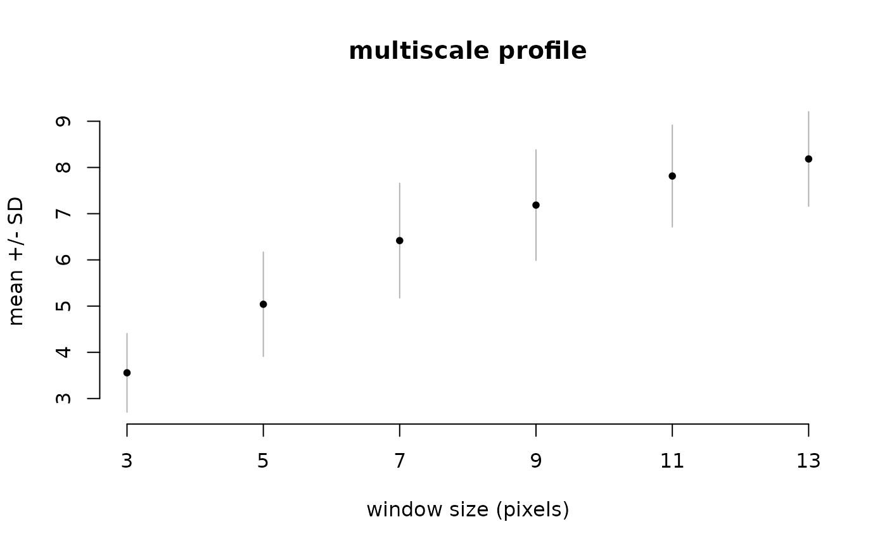
ms_profile(l0_mhm, summary_fun=median, error_fun=sd, ylab="median +/- sd")
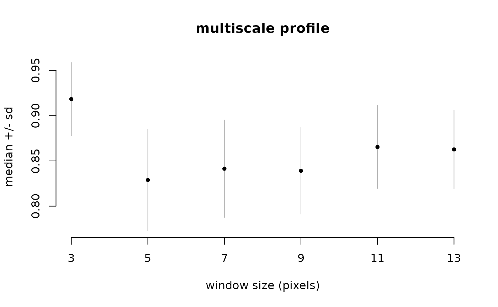
# and a synthetic map
app(l0_mhm, median) %>% p(title="multiscale map (median)")
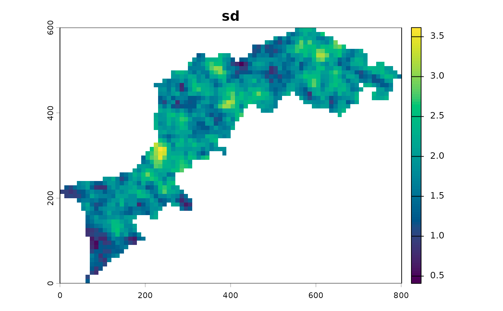
app(l0_mhm, sd) %>% p(title="sd", palette="Plasma")
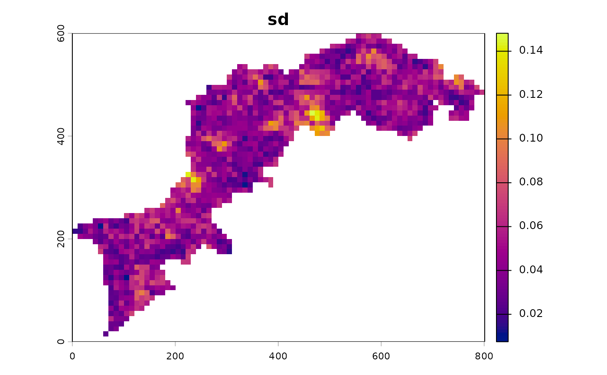
# calculate MHM on it
l0_mhm <- MHM(l0,
window=seq(2, 13, by=2)+1,
fun=shannon_evenness)
# display all monoscale maps
p(l0_mhm)
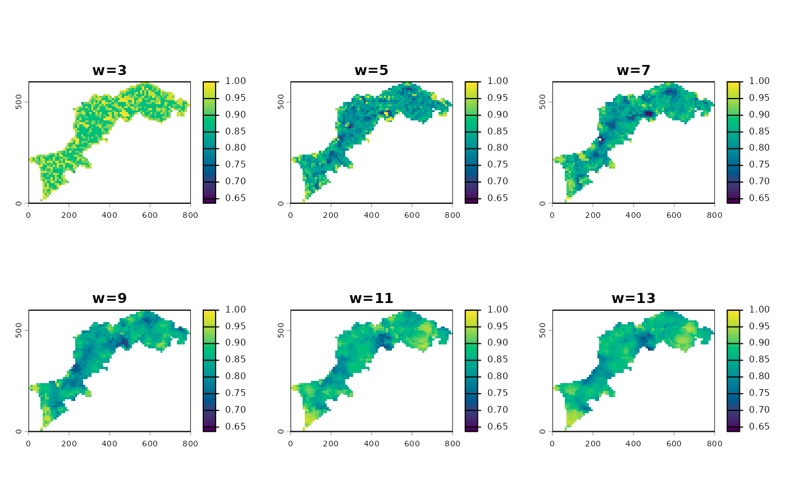
# the profile plot
ms_profile(l0_mhm)
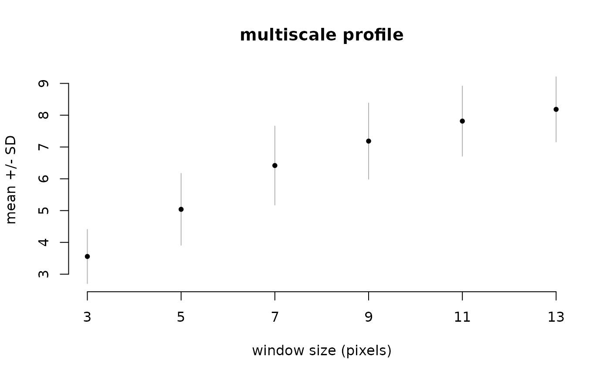
ms_profile(l0_mhm, summary_fun=median, error_fun=sd, ylab="median +/- sd")
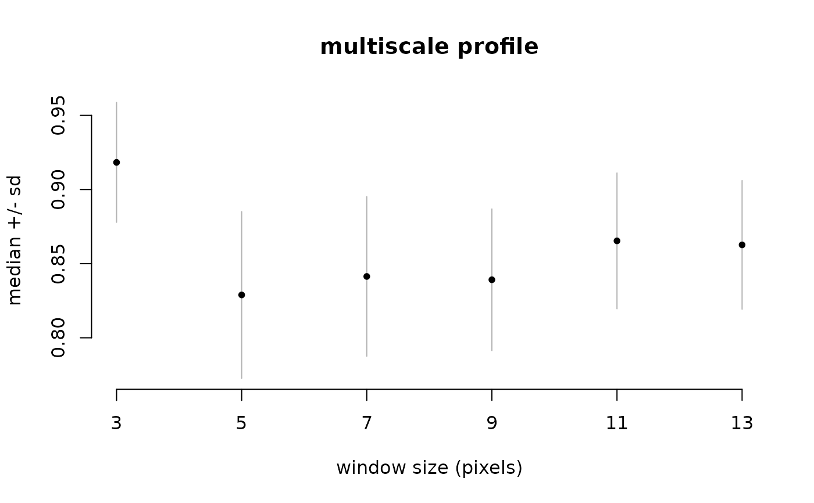
# and a synthetic map
app(l0_mhm, median) %>% p(title="multiscale map (median)")
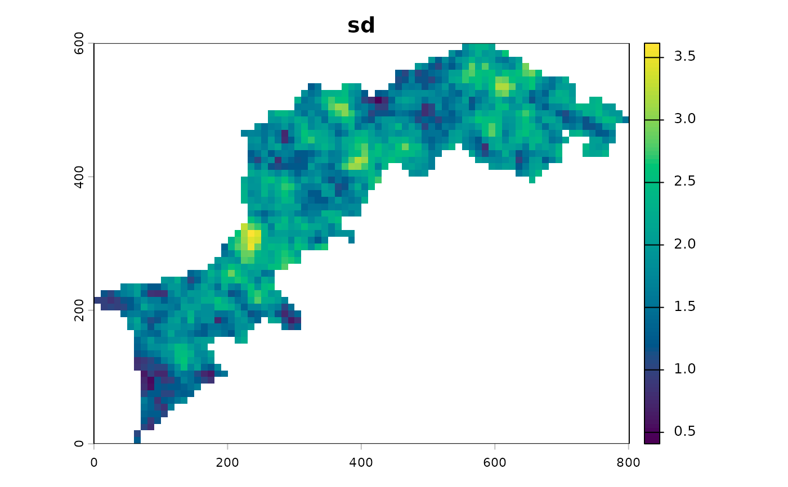
app(l0_mhm, sd) %>% p(title="sd", palette="Plasma")
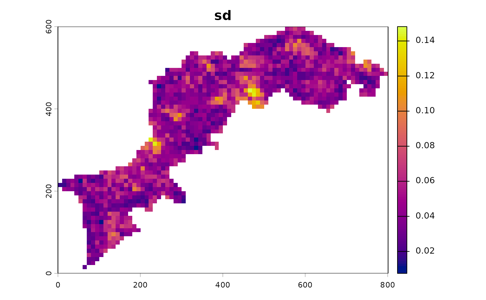